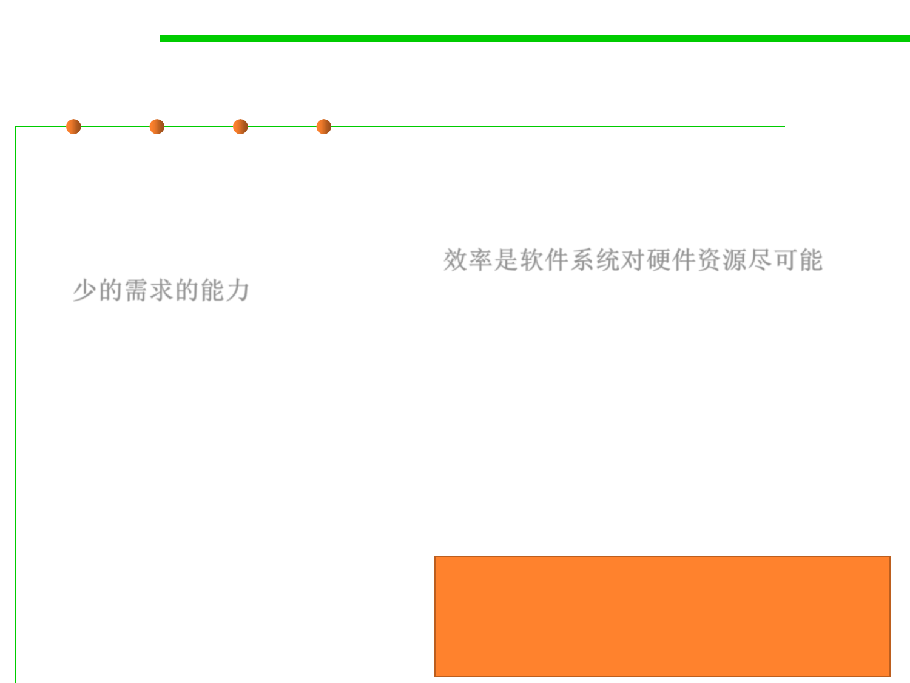

1.2 Quality Objectives of Software Construction
External 6: Efficiency(效率)
▪ Efficiency is the ability of a software system to place as few
demands as possible on hardware resources, such as processor
time, space occupied in internal and external memories, bandwidth
used in communication devices.效率是软件系统对硬件资源尽可能
少的需求的能力
▪ Efficiency does not matter much if the software is not correct
(suggesting a new dictum (格言), “do not worry how fast it is unless it is
also right ”). The concern for efficiency must be balanced with other
goals such as extendibility and reusability; extreme optimizations
make the software so specialized as to be unfit for change and reuse.
– Tradeoff among multiple quality factors
▪ Algorithms, I/O, memory management, etc.
Chapter 8 (Performance)
Abstract concepts for correctness of
computation vs. Concrete implementation
for performance through optimization